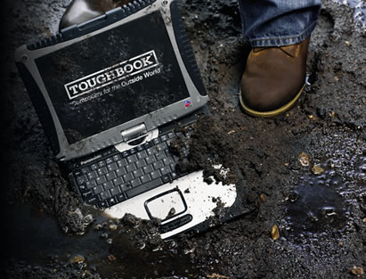

INNOVATION
THE BUSINESS MODEL
Building capacity and providing income opportunities will help women
support themselves and their families while restoring their dignity and
self-sufficiency.

In partnership with the Peanut Butter Project (PBP),
the Helim Changemaker Project will establish a factory
to produce a peanut-based “Ready-to-Use
Therapeutic Food (RUTF) to combat Moderate and
Severe Acute Malnutrition.
Operating as a hybrid non-profit social enterprise, the
earned income of the factory will directly support the
ARC academy to make it sustainable in the long run.
For this model, the factory provides employment and
income to women and other actors across the supply
chain. The income will allow an initial group of women
to support themselves and their families.
Factory workers will work in a safe and clean
environment, earning a fair wage, and perform
dignified work that is saving the lives of children,
maybe even their own.

Through groundbreaking innovation, ARC will be the
first organization to provide virtual and transformative
eLearning training and capacity building to IDPs in
Darfur.
Through virtual modules and online courses
accessible from a computer lab set up near Kalma
Camp, women and other participants will receive
training in areas such as basic literacy, computer
skills, midwifery, community-health work, nutrition, and
business entrepreneurship skills.
A daycare center allows women students and factory
workers to have their children in a safe environment
while they learn or work.
After training, the women will be able to use their new
skills to support understaffed areas in the camp, and
to improve the quality of their community while
earning an income to support themselves and their
families.
THE INNOVATION
TRANSFORMATIVE EDUCATION
- An eLearning platform that will enable greater availability of quality content that is easily
customizable and can offer a much wider range of learning experiences to improve education
outcomes and local employment opportunities
- An educational environment and experience that is co-created with the women learners,
community leaders, and other partners
- Opportunities to engage with many partners in the health and business fields and to engage with
donors through learner sponsorship
MEANINGFUL AND DIGNIFIED EMPLOYMENT
- Training that emphasizes education that will make women learners employable for wage work or
able to start their own businesses
- Opportunity for women to choose career tracks in entrepreneurial income generation businesses
or health professions
- Employment opportunities across the value chain that tackle poverty, underemployment, and
boredom in the camp settings
- Women working in the factory will be able support themselves and their families while producing
life-saving food for their children
COMBATING MALNUTRITION
- Local production of RUTFs increases the supply of this life-saving product, assisting UNICEF and
ARC to saving children’s lives
- Local factory production allows for the development of additional products to improve the health
of the population and additional income generation opportunities
SUSTAINABLE PRODUCTION OF RUTF, ECONOMIC OPPORTUNITIES AND EMPLOYMENT
- Current and future high demand for RUTFs will sustain the factory while providing meaningful
employment opportunities across the value chain
- This hybrid non-profit business model allows for sufficient earned income to support the eLearning
academy and is a scalable model for future expansion locally or for other ARC programs
READY-TO-USE THERAPEUTIC FOODS
RUTFS: THE PENICILLIN OF THE FIGHT AGAINST MALNUTRITION
RUTFS have a proven nutritional formula to bring severely and moderately malnourished children quickly back
from the edge of starvation. It addresses problems such as lack of access to clean water and allows for
treatment outside of clinics or other health centers.
RUTFS:
- Do not require preparation, water, or refrigeration
- Can be eaten straight from the package and stays fresh after
opening
- Can be given to any child, even in the most advanced and severe
stages of malnutrition, anywhere, and by anyone.
- Have a recovery rate from malnutrition of 95% compared to a
25% to 40% rate for children who were treated using traditional
hospital therapies
- Are credited with dramatically lowering child mortality rates
during famines in Africa
Under a regimen of RUTFs, a child can quickly gain weight and go from a near-death state to relative health
in a month.
They have significantly revolutionized the treatment of malnourished children.
ARC'S "NESSA EL-KANZ" E-LEARNING ACADEMY
E-LEARNING: THE NEXT ERA OF CAPACITY BUILDING
Africa is positioned to leapfrog traditional education all together, as it has done by adopting
mobile phones rather than first building out fixed telephone networks.
A turning point has been reached in Africa where trends have made eLearning more feasible:
- Reduced cost of computing devices
- Reduced power consumption of devices
- Availability of off-grid power
- Reduced need for expensive set up and management of servers,
networking and data storage with Cloud computing.
Books are:
- Too expensive
- Heavy, difficult to transport
- Static content
- Cost has increased over time
eDevices are:
- Less costly than books
- Thousands of books fit in one device
- Dynamic content
- Cost is decreasing dramatically
MEETING THE CHALLENGES OF E-LEARNING IN DARFUR
The difficult environmental conditions and the lack of stable electricity flow in Kalma Camp are not an
impediment to Helim’s Changemaker Project.
Right in line with its thrive for innovation, this project utilizes 21st Century technology to
bring durable and resistant computer access to even the most insecure and unfavorable environments.

All the way from Panasonic to ARC’s Nessa El-Kanz Academy in Darfur, Helim brings the
latest development in rugged computer systems:
-
Extreme Durability: Panasonic’s Toughbook is shock proof, bulletproof, waterproof, dustproof, and able
to withstand extreme hot and cold temperature.
-
Minimal need for powering: Panasonic’s Toughbook has an enlarged battery life of 21 hours, eliminating
the problem of unstable electricity source. It can be used all day in the Academy, and taken to the
manager’s house or office for charging in the evening.
-
Super user-friendly Interface: Panasonic’s Toughbook includes a touchscreen mode that facilitates
its use for less- computer trained users.
-
Affordable: A state of the art Panasonic Toughbook laptop costs $600,
reducing costs of a regular computer station by % 40.